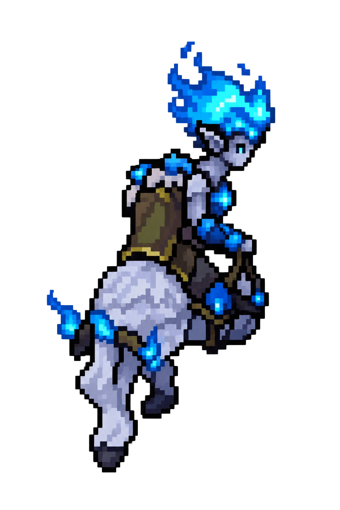
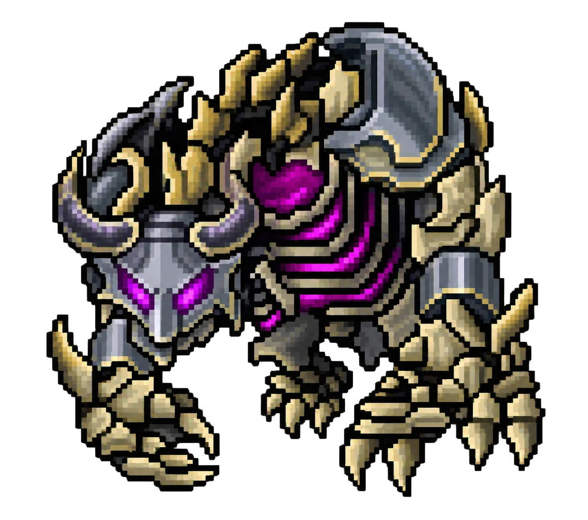
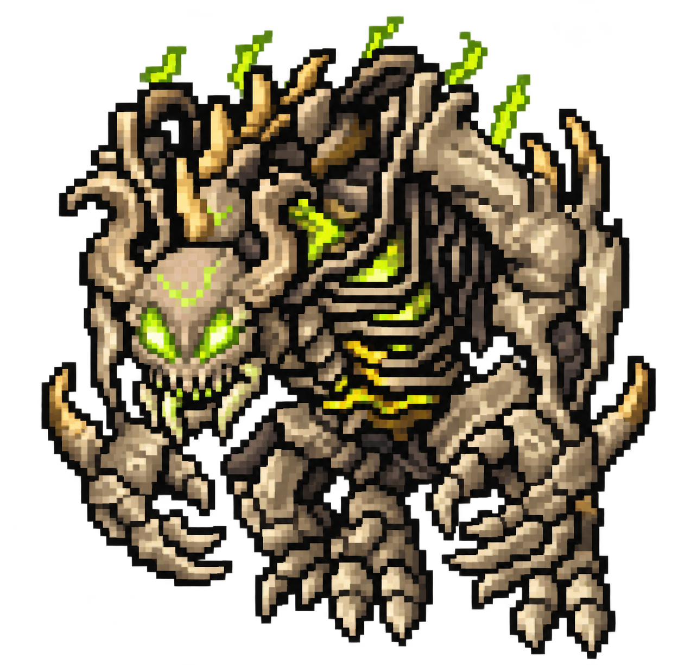
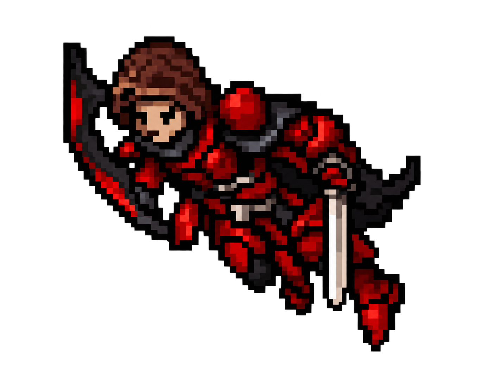

AvaloriumOT · Hunt Custom
Escolha sua hunt custom
Cada hunt tem uma página própria com acesso, criaturas, dano, resistências e loot. Os bosses Zy’Thar e Azkalon estão nas páginas de suas áreas.
Hunts disponíveis

Sanctum of Fire & IceFogo e gelo com Frezee, Firen e Firzen; acesso pelo portal elf fire e ice. New Elfs FirzenPortal de level 800 e hazard 10 com o mesmo bestiário do Sanctum.
New Elfs FirzenPortal de level 800 e hazard 10 com o mesmo bestiário do Sanctum. Pyramid of Azhr'khalAs três True Asuras, suas fraquezas elementais e os drops da pirâmide.
Pyramid of Azhr'khalAs três True Asuras, suas fraquezas elementais e os drops da pirâmide.
Void Corruption Depths — Outer VoidPrimeira zona do abismo, com Ravager, Brute e Riftcaster.
Void Corruption Depths — NetherboundSegunda zona do abismo, com três criaturas Netherbound e o boss Zy’Thar.
The Fallen UsurpersOs Fallen Usurpers, o Lion Beast e o boss Azkalon.Como ler os números
A chance de loot usa a base do servidor: 100.000 = 100%. O valor entre parênteses no dano é o teto do golpe, não a média por segundo. A fatia de cada elemento vem do comentário de balanceamento do monstro. Resistência positiva reduz o dano recebido; valor negativo aumenta. Hazard exigido nos portais é o de Gnomprona Gardens. Todos esses acessos pedem conta VIP.